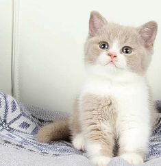
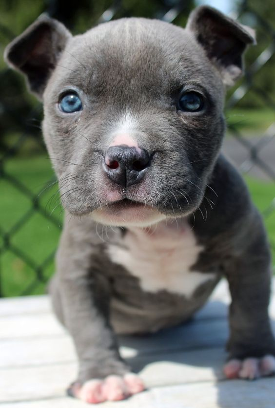
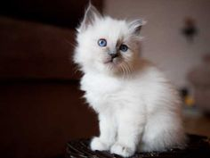
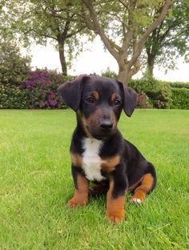
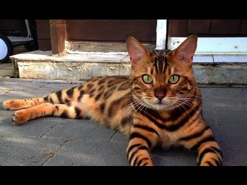
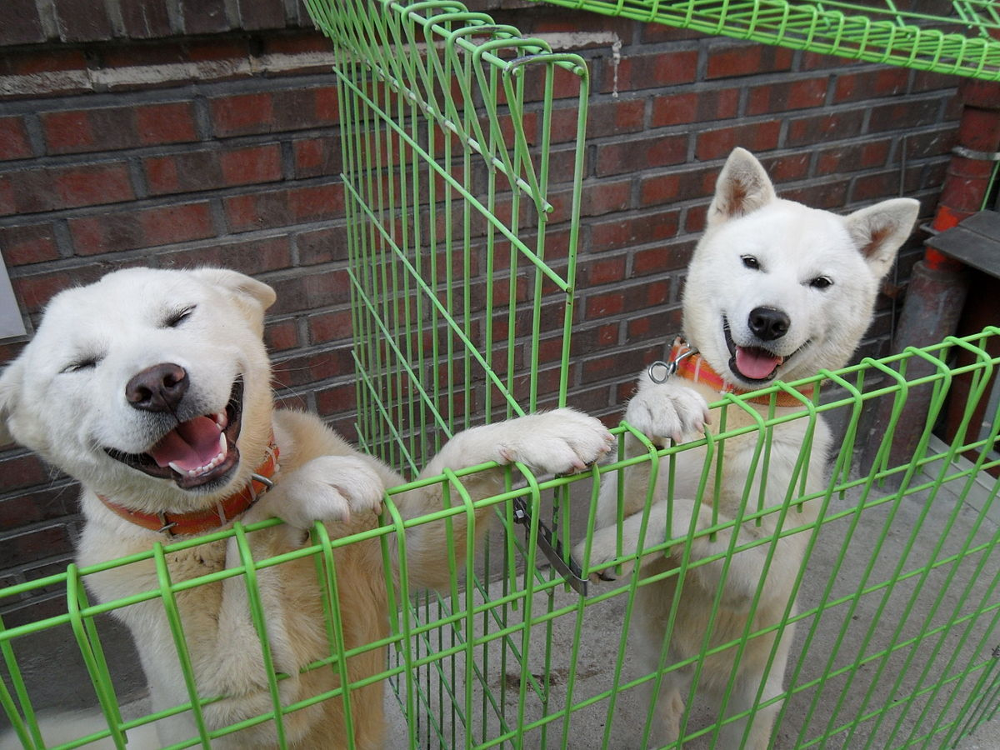
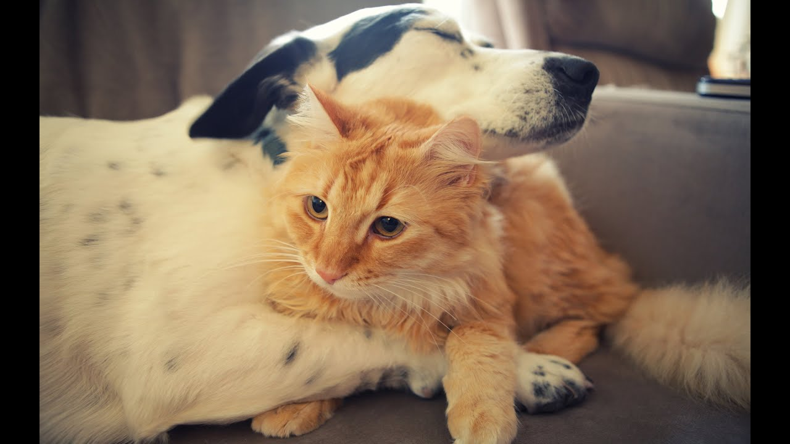

JackAge: 6 to 12 months Gender: Male Breed: British Shorthair Hi, I'm Jack. I am a gentle and soft loving boy. I love cuddles and laying on laps and I'm just a happy boy. I would love to find my loving home, so if you have space in your home and heart for me I will shower you with affection. Adopt Me Please! |
TysonAge: 5-7 months Gender: Male Breed: Pitbull Hi, I'm Tyson. I am a friendly, playful, snuggly puppy! I'm vaccinated, sterilised, dewormed, deflea'ed and infused with love and cuddles. I need to be taught all the good things that puppies need to learn to grow up to be a adult dog. I thrive on attention and affection and I just need that special someone so I can be the centre of their universe Adopt Me Please! |
SnowballAge: 6 to 12 months Gender: Female Breed: Birman Hi, I'm Snowball.If you are looking for a cat that is as cute as a kitten but with a degree of independence that an adult cat exudes, look no further. I will provide you with much love and happiness. Adopt Me Please! |
StellaAge: 3 - 5 months Gender: Female Breed: Jack Russell Hi, I'm Stella. I am a friendly, playful, snuggly puppy! I'm vaccinated, sterilised, dewormed, deflea'ed and infused with love and cuddles. I need to be taught all the good things that puppies need to learn to grow up to be a adult dog. I am full of energy and I bring so much happiness to everyone around me. A Home For Your Pet is amazing, but I would really love to find my forever home. Adopt Me Please! |
TigerAge: 9 months Gender: Female Breed: Bengal Hi, I'm Tiger. I am a friendly and love snuggling! I'm vaccinated, sterilised, dewormed, deflea'ed and infused with love and cuddles. I need to be taught all the good things that kittens need to learn to grow up to be a adult cat. I am full of energy and I bring so much happiness to everyone around me. A Home For Your Pet is amazing, but I would really love to find my forever home. Adopt Me Please! |
Albert and EinsteinAge: 7 - 12 months Gender: Golden Retriever Hi, We are Albert and Einstein. We are brothers. We are very friendly, playful and love people! We are both vaccinated, sterilised, dewormed, deflea'ed and infused with love and cuddles. We need to be taught all the good things that puppies need to learn to grow up to be a adult dog. We are full of energy. A Home For Your Pet is amazing, but we would really love to find my forever home. Adopt Me Please! |
Ginger and BiscuitAge: dog: 12 months - cat 12 months Gender: Both Females Breed: Jack Russell and British Longhair Hi, We are Ginger and Biscuit. We are friendly, playful, and love to snuggle with people! We are both vaccinated, dewormed, deflea'ed and infused with love and cuddles. We need to be taught all the good things to make us grow into responsibile adults. We are both full of energy and bring so much happiness to everyone around us. A Home For Your Pet is amazing, but we would really love to find our forever home. Adopt Me Please! |
For more information on how to adopt a pet or to look at more of our animals please visit our Facebook page
Adopt A Pet